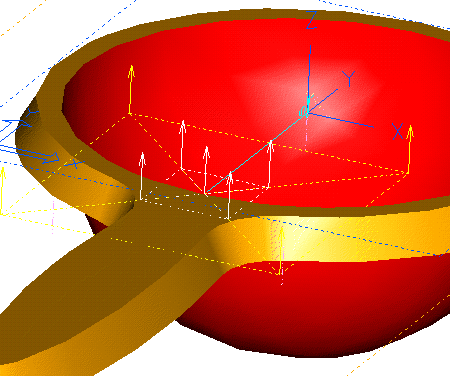
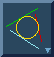

| Next Page | Previous Page | First Page |

Create a Reference plane MB3 Offset Surface "Upwards" 5mm

SIP on the Reference plane.
Create a Rectangle By Center, focus on the center of the bowl to align the rectangle center.

Add a line from the bowl center to the center
of th furtherest line.

Make the two lines Perpendicular.

Ground the line to be Vertical.

Dimension and Modify the sizes as shown. Make the 10mm dimension match half the 20mm dimension.

Create 2 Circles By Tangency as shown.


Revolve the half section (Stop at Intersections) Cutout.